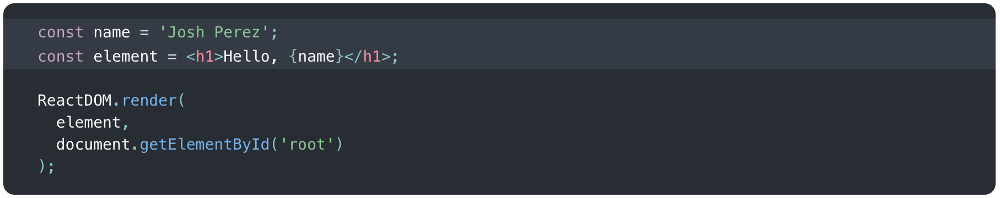

What is React.js?
What is React.js?
- React is a view layer library, not a framework like Backbone, Angular etc.
- You can't use React to build a fully-functional web app
- Developed by Facebook
- React used by: Facebook, Instagram, Netflix, Reddit, Airbnb and etc.
Why was React developed?
Why was React developed?
- Complexity of two-way data binding
- Bad UX from using "cascading updates" of DOM tree
- A lot of data on a page changing over time
- Complexity of Facebook's UI architecture
React advantages
React advantages
- Easy to mix HTML and JS
- Easy to understand what a component will render
- Uses full power of JS
- React is fast! Using virtual DOM objects enables fast batch updates to real DOM, with great productivity gains over cascading updates of DOM tree
- No complex two-way data flow
Fundamentals
Most important terms in React
JSX
JSX
- One of the coolest things in React
- XML-like syntax for generating component's HTML
- Easier to read and understand large DOM trees
- Translates to pure JavaScript using react-tools 
Virtual DOM
Virtual DOM
- The virtual DOM is used for efficient re-rendering of the DOM
- React aims to re-render the virtual tree only when the state changes
- Uses 2 virtual trees (new and previous) to find differences and update real DOM
- Does not update entire component in real DOM - only computes a patch operation that updates part of the DOM
Rendering an Element into the DOM
Rendering an Element into the DOM
- Applications built with just React usually have a single root DOM node
- To render a React element into a root DOM node, pass both to ReactDOM.render()
- Everything inside id "root" in your main HTML-file will be managed by React DOM
Component
Component
Components are self-contained reusable building blocks of web application. They describe your UI at any point in time, just like a server-rendered app. The simplest way to define a component is to write a JavaScript function, but you can also use an ES6 class to define a component.
Class components
- To define a React component class, you need to extend React.Component
- The only required method is render()
- Inserted into DOM using ReactDOM.render()

Functional components
- To define a React Functional component, you need to write a JavaScript function
- The function must return React element
- Inserted into DOM using ReactDOM.render()
Props
Props
- Passed down to component from parent component and represents data for the component
- in Class components access via this.props
State
State
- Represents internal state of the component
- in Class components access via this.state
- When a component's state data changes, the markup will be updated by re-invoking render() method
- For changing state use method setState()